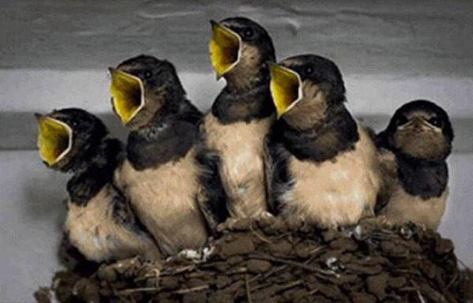

Audio

Omschrijving
Audio
1.
In the middle.
Fay Lovsky
Your browser does not support the audio element.
2.
Zwarte gaten, eenvoudiger wordt het niet.
Inleidende menupagina
Your browser does not support the audio element.
3.
Een speld.
Your browser does not support the audio element.
4.
Gat, van buitenaf.
Your browser does not support the audio element.
5.
Gat, van binnenuit.
Your browser does not support the audio element.
6.
De walrus en de timmerman.
Lewis Carroll, vertaald
Your browser does not support the audio element.
Copyright © 2002, 2009 Hans de Jong, all rights reserved